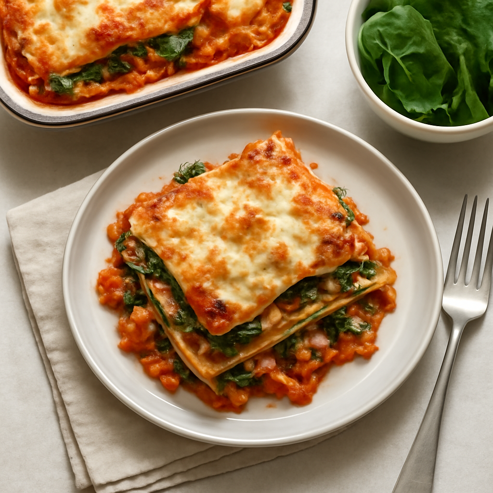

Wednesday — Vegetable Lasagna with Spinach and Ricotta

Cook Time:
40 minutes
Method:
Oven
vegetarian
lasagna
quick
healthy
Ingredients for 6
9 organic whole wheat lasagna noodles
2 cups organic ricotta cheese
3 cups spinach
3 cups marinara sauce
2 cups shredded mozzarella cheese
Salt and pepper to taste
Instructions
Preheat oven to 375°F (190°C).
In a baking dish, layer noodles, ricotta, spinach, marinara, and mozzarella.
Repeat layers, ending with mozzarella on top.
Cover with foil and bake for 30 minutes, then uncover and bake for an additional 10 minutes.
Toddler Notes
Ensure lasagna is cut into small squares for easy handling.
Avoid whole pieces of spinach, chop finely.
← Back to weekly plan